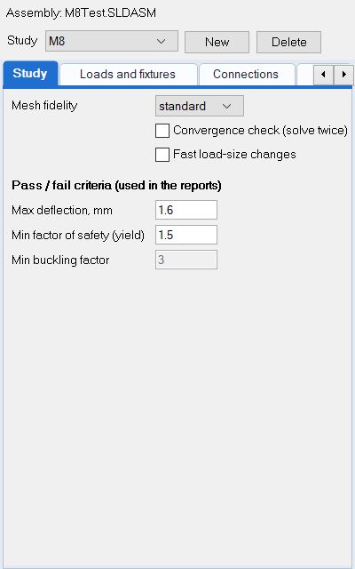
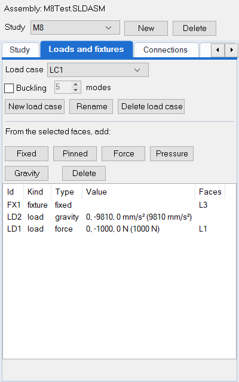
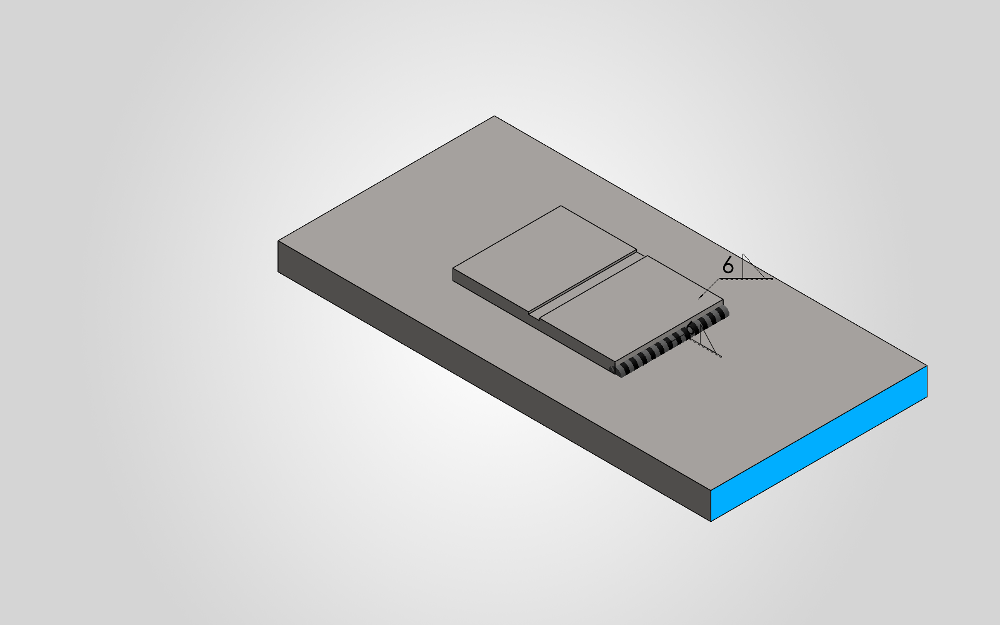
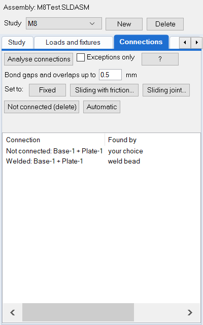
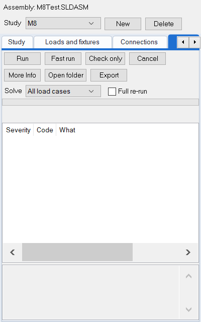
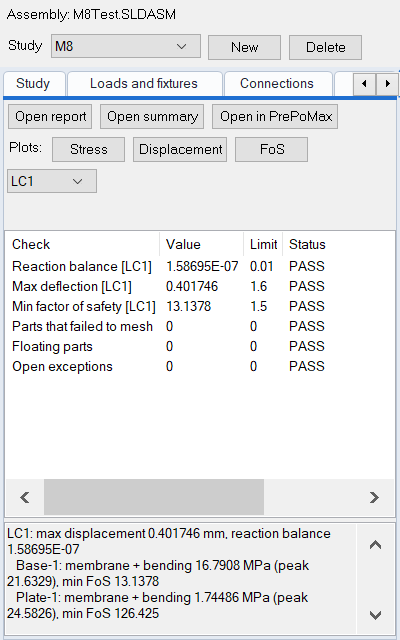
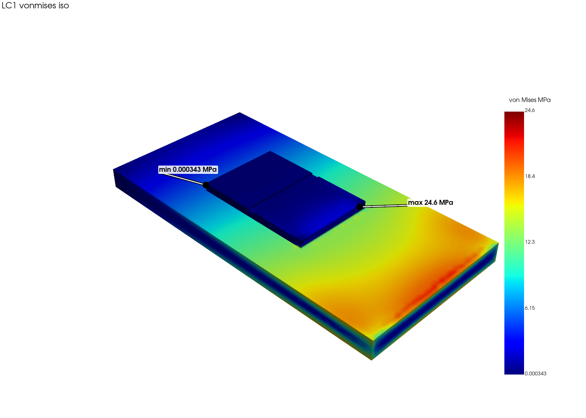
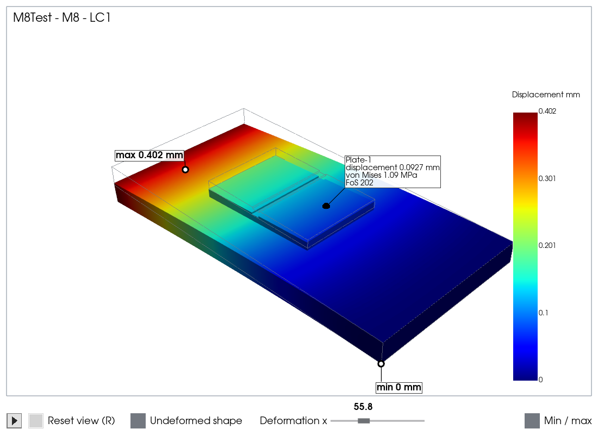

1Find AsmFEA in SOLIDWORKS
- Start SOLIDWORKS (2018 or later; one of the versions you ticked in the installer). AsmFEA loads with it.
- On the right of the window, the task pane has a new tab with the coloured hexagon icon (the one at the top of this page): click it to open AsmFEA.
- If it is missing: Tools > Add-ins, tick AsmFEA in both columns, then OK.
2Prepare the assembly and start a study
- Open the assembly and give every part a material (right-click the part > Material). A single part works too: its bodies are treated as the parts, and bodies that touch are joined.
- Click New in the pane and name the study. It is saved inside the assembly (or part).
- On the Study tab pick a mesh fidelity (coarse is quick for a first look) and check the pass/fail criteria the reports use. Changes are kept as you make them.
- If you expect to try several sizes of load, tick Fast load-size changes: each load is solved once, and changing only load sizes afterwards needs no new solve.

3Add fixtures and loads
- Select one or more faces on the model.
- On the Loads and fixtures tab click Fixed (held still) or Pinned (can rotate).
- Loads belong to a load case (a set of loads solved together). Pick one at the top of the tab, or click New load case; every case is solved in the same run. Fixtures apply to all cases. Tick Buckling to check a case for buckling too (runs take longer).
- Select faces and click Force or Pressure, or click Gravity for self-weight. Give the force as X, Y and Z components; the resultant shows as you type.
- For a force acting away from the faces (a lever arm, a torque), also give how far from the faces' centre it acts, in X, Y and Z (leave 0, 0, 0 for a force on the faces).
Click a row in the list to highlight its faces on the model; a load also shows an arrow pointing at where it acts. Double-click a row to change it.


4Check how the parts connect
- Click Analyse connections: the list shows every place where parts meet and how they will be joined.
- To change one, select it and Set to: Fixed (bonded), Sliding with friction..., Sliding joint... or Not connected. Automatic undoes your choice.
- Weld beads appear as their own rows.

5Run
- On the Run tab click Run. The bar and the line below it show what is happening; a first run takes from under a minute to a few minutes.
- Check only just checks the set-up, quickly, without solving.
- Fast run is for trying design changes: a coarser model that shows where the problem is and whether a change helped, in a fraction of the time. Its results are marked APPROXIMATE and it writes no report: do a full Run at the end, before you rely on the numbers.
- A re-run redoes only what your changes need: with nothing changed it finishes in seconds, and a new pass/fail limit skips the solve. Tick Full re-run to redo everything.
- A model too large for CalculiX to fit in your computer's memory is no longer refused: AsmFEA solves it with its own hybrid solver, part by part, using the memory it has free. A note on the Run tab and in the report says when that happened.
- Anything that needs attention is listed: double-click it to see what it means and what to do.

6Look at the results
- The Results tab shows the pass/fail checks and the key numbers for each load case.
- Stress, Displacement and FoS open
a 3-D window (their tooltips repeat what follows):
- left drag to rotate, wheel to zoom, right drag to pan, as in SOLIDWORKS; Reset view (or R) goes back;
- click the model to see the part and its stress, displacement and FoS at that point; click the background to clear it;
- ▶ play ramps the load up and down so you can watch the stress build; click it again to stop at the full load;
- Deformation x exaggerates the deformed shape (0 shows it undeformed), and Undeformed shape adds a grey outline of the original;
- Min / max shows the highest and lowest values; drag their labels anywhere.
- Open report gives the full Word report; Open summary a half-page summary. Both need a full run (they are greyed out after a fast run).
- The pictures follow the way you look at the model in SOLIDWORKS: turn it, then open the results again.



7Optional: PrePoMax, for a closer look
PrePoMax is a free program for exploring results in detail: section cuts, values at any point, animations. AsmFEA does not need it, but Open in PrePoMax on the Results tab opens the last run in it.
- Download it from prepomax.fs.um.si/downloads (version 2.6.0 is the one AsmFEA was tested with).
- It is a zip file: unzip it anywhere, for example
C:\PrePoMax. There is nothing to install. - In AsmFEA click Open in PrePoMax and choose Find PrePoMax.exe... the first time; AsmFEA remembers it.
✓How accurate is AsmFEA?
The verification report (also in the Start menu, and as a PDF in the AsmFEA folder) compares AsmFEA with classical hand calculations on four test cases (a cantilever, a beam under its own weight, two members joined end to end, and a buckling column) and checks the CalculiX solver against its own test examples and two NAFEMS benchmarks. Every comparison came within its acceptance criterion, the largest difference being 0.6 %.
Satisfy yourself of its accuracy for your own work by running your own tests against hand calculations or other trusted results before relying on it.
8Keep your work
- The study is saved inside the assembly: save the assembly to keep it.
- Results and reports are in a folder next to the assembly called
<assembly name>_FEA. - Units are millimetres, newtons and MPa throughout.